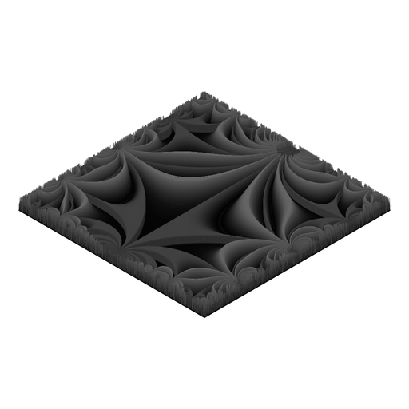

Why is this hyperbolic background invariant?
I have a mathematical question for you, because it is a mystery for me.
Look at this animation:

I get it as follows. Each frame corresponds to a value of \(t \in [0,3[\) (I take \(160\) values of \(t\) subdivising \([0,3[\)). Here is how I get the frame corresponding to one value of \(t\):
for each point in the unit square \(S = {[0,1]}^2\), I take its complex affix \(z\), and I send \(z\) to the open upper half-plane \(\mathbb{H} = \bigl\{z | \Im(z) > 0\bigr\}\) with a conformal map \(\psi\) from \(S\) to \(\mathbb{H}\);
I attribute a color to \(R^t\Bigl(\lambda\bigl(\psi(z)\bigr)\Bigr)\) where \(R\) is the Möbius transformation of order \(3\) defined by \(R(z) = -\dfrac{1}{z+1}\) and \(\lambda\) is the modular lambda function.
The modular lambda function and the conformal map \(\psi\) are implemented in my R package jacobi.
My question is: why does the hyperbolic tessellation that we can see as the “background” of the animation not move? Why is it invariant?
I observed the same phenomenon for other modular functions, for example the Klein j-invariant function.
The color mapping \(\mathcal{C}\) is defined with the help of the HSI color space. The color \(\mathcal{C}(z)\) depends on the phase of \(z\) only. Precisely, \(\mathcal{C}(z)\) is the HSI color with:
hue \(\in [0, 360[\) given by the phase \(\varphi(z) \in [0, 2\pi[\) of \(z\) converted to degrees;
saturation given by \(\sqrt{\bigl(1 + \sin(w)\bigr) / 2}\) where \(w = 2\pi\log\bigl(1+\varphi(z)\bigr)\);
intensity given by \(\bigl(1 + \cos(w)\bigr) / 2\) with \(w\) as above.
Why do we get such a result? I really don’t know.
Before leaving you, let me show you a 3D version of this animation that I made with the isocuboids R package:

I hope you like it.